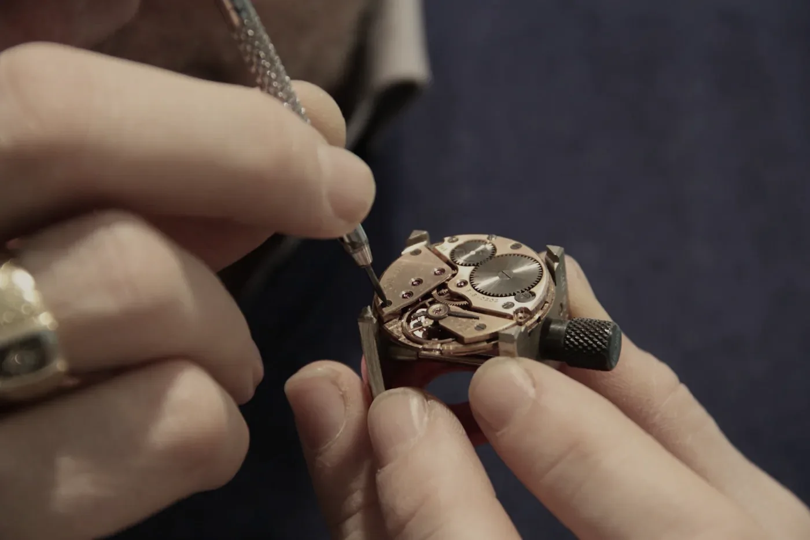

Note 03Seven minutesAline Vuilleumier, bench 01
On the sweep seconds hand.
Six steps a second, and the part of the watch you will look at longest.
Look at a Calibre M1 for long enough and you stop seeing the hours and the minutes and begin to see only the third hand. It is the one part of the watch that is always moving, which makes it the one part that is always being judged.
It does not sweep, whatever the word suggests. The balance beats six times a second, and each beat lets the escape wheel advance by one tooth’s worth of travel. The hand moves in six small steps, one degree each. Your eye, which cannot count that fast, rounds them into a glide.
A sweep is six small decisions a second that your eye refuses to count.

Fig. 11Bench 01. The hand goes on last, and is fitted by the person who will sign the movement.
That rounding is the whole trick, and it is unforgiving. If the hand is fitted a hair off-centre you will not see it at twelve or at six. You will see it at nine, and again at three, a hundred times a day, for the rest of the watch’s life. So Aline fits every hand herself, with the dial held under a loupe and the pivot supported from beneath, and presses it home with a lever that gives way before the pivot does.
The check afterwards is dull and absolute. With the movement on the timing bench, the hand is carried round a full minute under a 10× glass, and its tip is read against the minute track at every five. If it is more than a hundredth of a millimetre off the line at any of them, the hand comes off and goes on again.
There is a smaller, older reason to care. A hand that runs is a hand that tells you the watch is alive. Someone who winds a Meridian in the morning does not look first at the time. They look at the third hand, find it moving, and only then, a little reassured, ask what the time is.
Aline Vuilleumier
Bench 01, since 2011